重點摘要 Key points
- 柴犬的三種代表性眼病：遺傳性白內障（hereditary cataract）、原發性隅角閉鎖青光眼（primary angle-closure glaucoma, PACG）、角膜內皮炎（corneal endotheliitis）。三者的共通策略是早期辨認、早期轉診。
- 柴犬的白內障很年輕就來：手術年齡中位數 2.1 歲，其他品種 8.4 歲（p < 0.001）；白內障會痛——水晶體誘發葡萄膜炎（lens-induced uveitis, LIU）、水晶體脫位（lens luxation）、續發青光眼、視網膜剝離，連未成熟白內障也可能已有 LIU。適當手術預後好：術後 3 年視力保留 87.7%（其他品種 65.1%）。
- 瞇眼或紅眼的柴犬，當天量眼壓：柴犬佔日本青光眼病例的三分之一（33%），全部是原發、隅角異常。隅角鏡（gonioscopy）只能分級風險，不是診斷：80.6% 沒有青光眼的柴犬也有隅角異常。
- 時間決定視力：發病 72 小時內就診，86.7% 還有視力，之後降到 44.1%；有視力時早期做 Ahmed 青光眼引流閥，12 個月仍有視力 69.2%，單用藥物只有 7.7%。對側眼從第一次就診就要有預防計畫。
- 角膜內皮炎：對類固醇有反應但會復發。特徵是地圖狀內皮混濁、局部水腫、結膜充血、眼壓正常、前房發炎輕微；緩解不等於內皮恢復，內皮細胞密度可能持續下降，要用鏡面顯微鏡（specular microscopy）與 OCT 追蹤；ripasudil 可能有幫助（證據為單一病例，尚待驗證）。
總覽：柴犬的眼睛 Eyes of Japan: Ocular diseases of the Shiba Inu
本頁整理自 FASAVA 2026（台北）「Eyes of Japan」演講講義（講者 Yoshitaka Kobayashi，DVM，DJCVO，Animal Eye Care — Tokyo Animal Eye Clinic）。Hereditary cataract, primary angle-closure glaucoma, and corneal endotheliitis.
柴犬的氣質（開場）— Temperament of the Shiba Inu
日本犬保存會（Nihon Ken Hozonkai）1934 年標準提到三項本質：悍威（Kan-i，精悍有威嚴）、良性（Ryōsei，忠順、服從）、素朴（Soboku，不加修飾的純樸與尊嚴）；感覺敏銳、動作敏捷、行動輕快而有彈性。這段只是開場，與眼科無直接關係。
本場的三種品種相關眼病 — Three breed-associated ocular diseases
| 疾病 | 好發年齡 | 講義的重點 | 關鍵動作 |
|---|---|---|---|
| 遺傳性白內障（Hereditary cataract） | 年輕犬，常 <5 歲 | 該診所白內障病例中最常見的品種之一 | 早期轉診；篩檢種犬 |
| 原發性隅角閉鎖青光眼（PACG） | 中年犬（平均約 8 歲） | 日本最常受影響的品種 | 眼壓測量與例行隅角鏡檢查 |
| 角膜內皮炎（Corneal endotheliitis） | 年輕到中年（平均約 6 歲） | 此品種似乎特別常見 | 裂隙燈、OCT、鏡面顯微鏡 |
講者的數字多來自他自己診所的轉診族群（例如該診所檢查 467 隻犬、其中 158 隻白內障），會受轉診族群與品種受歡迎程度影響；講義也提到海外的好發品種清單不同（如 Boston Terrier、Miniature Poodle、Labrador）。本頁沒有另外上網核對講義內數字。
白內障基礎與併發症 Hereditary cataract
Cataract basics for the general practitioner, then what is distinctive in the Shiba Inu.
什麼是白內障、原因有哪些 — Cataract: any opacity of the lens or its capsule
水晶體（lens）或水晶體囊（capsule）任何一處的混濁都稱白內障。原因（講義引用 Veterinary Ophthalmology 第 6 版）：老年性（senile）、先天性（congenital）、遺傳性（hereditary，品種相關）、外傷性（穿孔傷、貓抓傷）、代謝性（糖尿病、低血鈣）、輻射、毒性、繼發於葡萄膜炎或視網膜退化。
白內障等於老化嗎？ — Is cataract an aging change?
- 診斷時平均年齡 10.3 ± 3.9 歲，但年輕犬也會得（該診所 103 隻的年齡分布顯示 ≤5 歲有一個獨立的年輕族群，包括柴犬）。
- 延誤就醫的想法：「只是老了」「看起來還看得到」「不急」「狗沒有視力也能生活」。
- 為什麼不能等：年輕發病的白內障可在數週內進展；併發症造成疼痛而不只是失明；拖延會縮小手術成功的時間窗。
- 病例舉例（Toy Poodle，5 歲，左眼）：6 週內從未成熟變成成熟並出現 LIU。
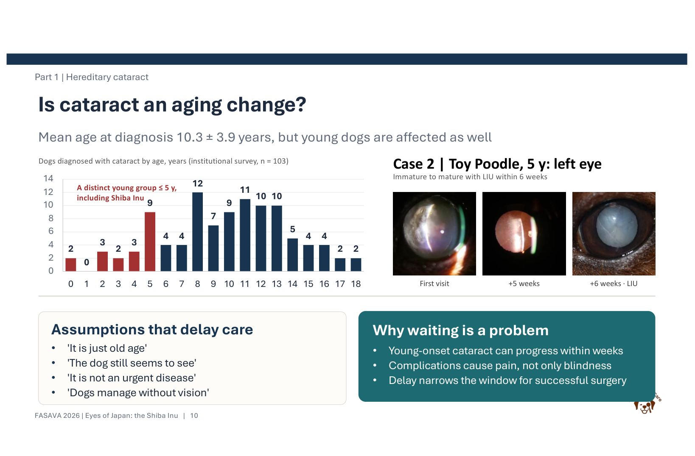
白內障分期 — Stages of cataract
| 分期 | 定義 |
|---|---|
| 初發期（Incipient） | 混濁 <15% |
| 未成熟期（Immature） | 混濁 16–99% |
| 成熟期（Mature） | 混濁 100% |
| 過熟期（Hypermature） | 皮質液化、囊皺縮 |
該診所診斷時分布：全部病例——初發 16%、未成熟 33%、成熟 32%、過熟 19%；≤5 歲的狗——初發 12%、未成熟 40%、成熟 28%、過熟 20%。就算 5 歲以下，也會走到過熟期。
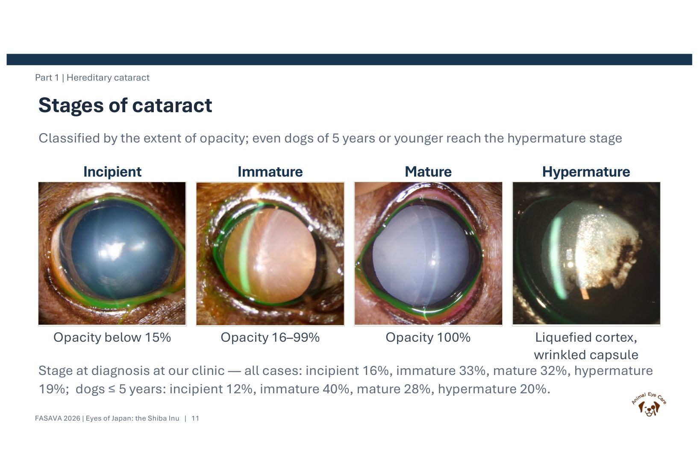
品種傾向（該診所自己的病例）— Breed predisposition
檢查 467 隻、其中 158 隻白內障。柴犬位居前幾名，與 Toy Poodle、Chihuahua 並列；講義提醒各國排名不同，品種流行度與轉診族群都會影響統計。
水晶體誘發葡萄膜炎 — Lens-induced uveitis (LIU)
漏出的水晶體蛋白打破免疫耐受，造成葡萄膜發炎。
- 臨床徵象：鞏膜上充血（episcleral hyperemia，紅且痛）、前房閃輝（aqueous flare，蛋白漏入前房）、瞳孔縮小與低眼壓（常比對側眼低、<10 mmHg）、葡萄膜外翻（ectropion uveae：瞳孔緣外翻、虹膜色素過多）、角膜後沉積物（keratic precipitates）、嚴重時前房積膿（hypopyon）。
- 未成熟白內障也可能已經有 LIU：混濁面積小不代表眼睛安全。
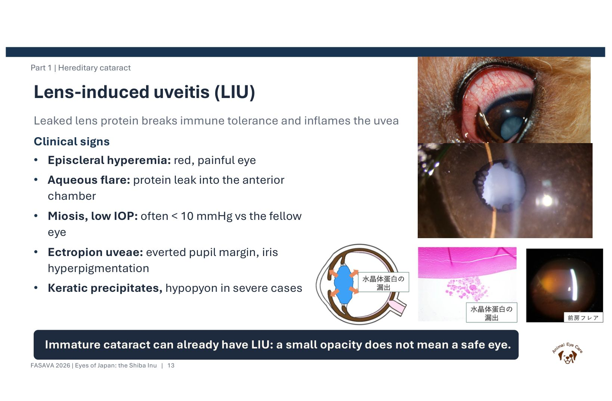
| 囊內溶解型（Phacolytic） | 囊破裂型（Phacoclastic） | |
|---|---|---|
| 水晶體囊 | 完整 | 破裂 |
| 機轉 | 可溶性蛋白穿過囊漏出；過熟或吸收中的白內障 | 皮質外露 → 嚴重纖維素性葡萄膜炎；外傷，或快速膨脹（如糖尿病白內障） |
| 病程 | 慢性、低度發炎 | 嚴重 |
| 處理 | 通常內科可控制 | 常單靠內科控制不了，即使仍在發炎也需要手術 |
併發症 — Complications of cataract
- 水晶體脫位（lens luxation）：懸韌帶（zonule）變弱；前脫位造成疼痛與高眼壓。
- 續發青光眼：粘連（synechiae）與隅角損傷降低排出。
- 眼內出血：嚴重 LIU 或視網膜剝離。
- 視網膜剝離：認為與 LIU 有關但細節不明；需要白內障手術合併玻璃體切除術（vitrectomy）。
- 先處理 LIU：沒治療的眼睛最後會走向粘連、青光眼與眼球癆（phthisis）。
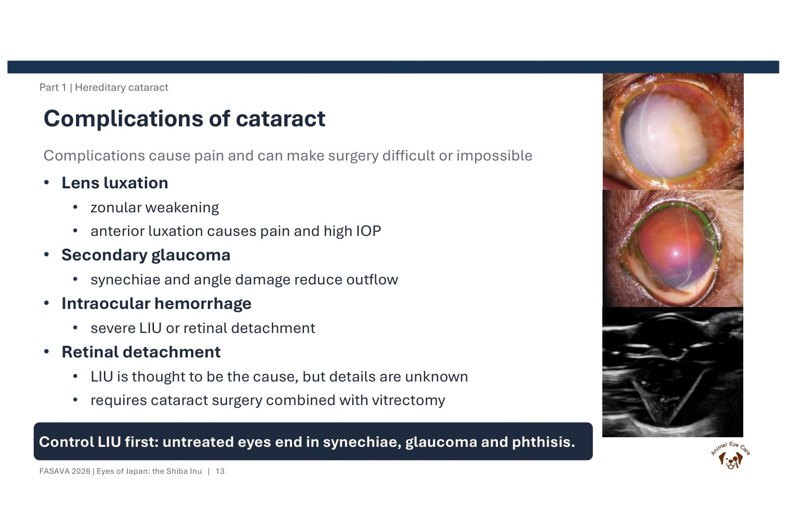
需要特別留意的白內障 — Cataracts that need close attention
- 數天到數週快速進展
- 未成熟也可能有 LIU
- 容易被「太年輕不會有白內障」漏掉
- 永存瞳孔膜（persistent pupillary membrane）、永存透明動脈（persistent hyaloid artery）、PHPV／PHTVL
- 小眼球（microphthalmia）、小水晶體（microphakia）
- 仔細追蹤；手術需規劃
- 約 50% 的糖尿病犬在 170 天內、80% 在 470 天內出現白內障
- 膨脹與囊破裂
- 快速雙側進展
這三類都進展很快——白內障手術的時間窗可能很快關閉。
柴犬白內障：手術資料、病例與篩檢 Cataract in the Shiba Inu
柴犬 vs 其他品種的手術年齡 — Age at cataract surgery
單一機構族群，追蹤超過 180 天，手術時年齡中位數（Mann–Whitney U，p < 0.001）：
| 組別 | 數量 | 手術年齡中位數 | 四分位距（IQR） |
|---|---|---|---|
| 柴犬 | 18 眼、15 隻 | 2.1 歲 | 19–58 個月 |
| 其他品種 | 257 眼、184 隻、34 個品種 | 8.4 歲 | 64–129 個月 |
多數柴犬在 5 歲前手術，三隻約 12 歲。
手術時的水晶體很軟 — Phaco energy was very low
- 柴犬的超音波乳化能量（EFX）中位數顯著低於其他品種（p < 0.001）：年輕水晶體軟，需要的超音波能量很少；年紀較大的柴犬則與其他品種相當。
- 手術規劃要預期水晶體軟、囊有彈性。
術後視力 — Visual prognosis after surgery
- Kaplan–Meier 3 年視力保留：柴犬 87.7%，其他品種 65.1%（log-rank p = 0.121，沒有統計顯著）。
- 失去視力的事件：柴犬 2/18 眼（一眼青光眼、一眼視網膜剝離）；其他品種 82/257 眼（31.9%）；觀察到 2 件，預期 5.5 件。
- 趨勢有利，但事件數太少，不足以宣稱差異。
- 遺傳方式與致病基因目前未知。
病例 1：柴犬，8 個月，未結紮母 — Case 1
- 主訴：左眼白色混濁；1 週前開始瞇眼，打類固醇與點 diclofenac 眼藥後有改善。
- 診斷：左眼成熟白內障；可能已有 LIU；幸好沒有囊破裂或視網膜剝離，但風險高；建議 1 週內手術。
- 手術：水晶體核很軟，超音波乳化時間 0 秒；預後良好。
- （超音波 B-mode 見下圖：右眼 OD 與左眼 OS。）
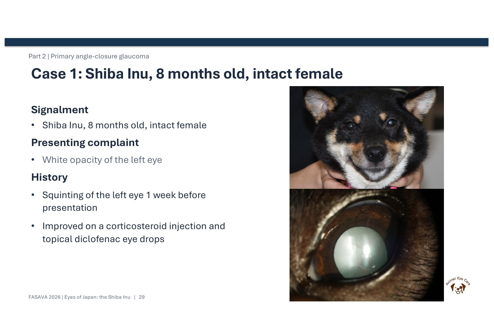
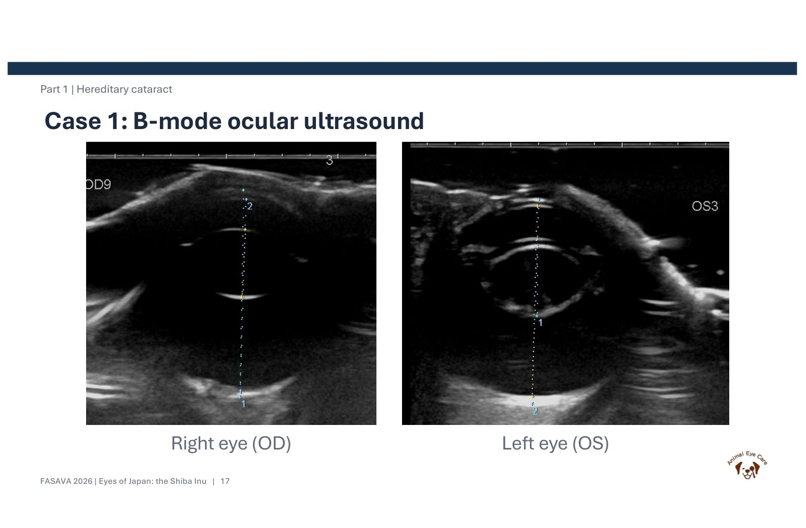
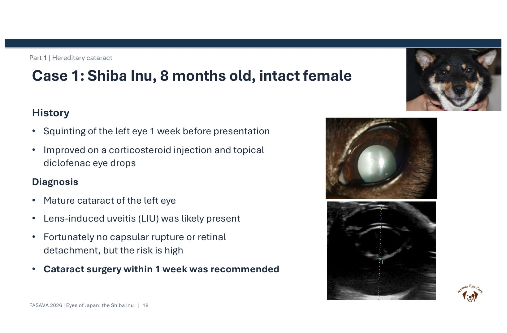
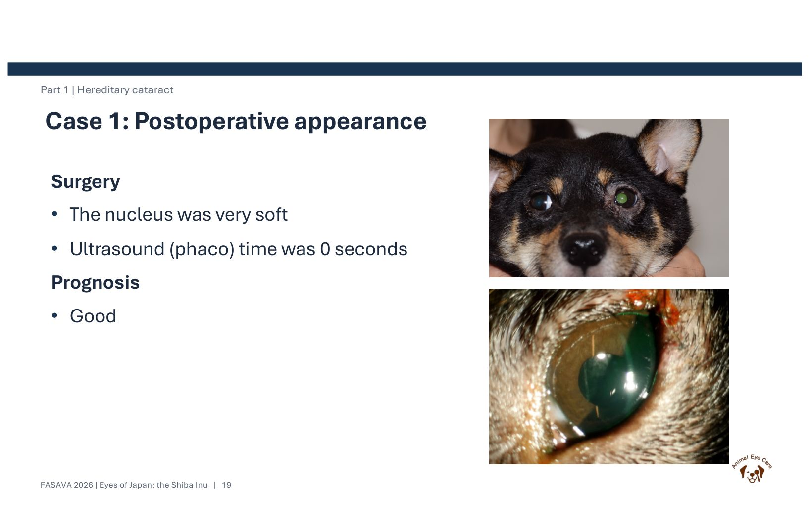
篩檢：後照法 — Retroillumination: the simplest screen for media opacities
- 在約 50 cm 處沿視軸打光，觀察眼底反光，可看出混濁與左右瞳孔差異；能發現白內障、前房閃輝與眼內出血。
- 是檢查透明介質（角膜、房水、水晶體、玻璃體）最好的第一步。
- 年輕柴犬用後照法篩檢，發現任何混濁就早期轉診。
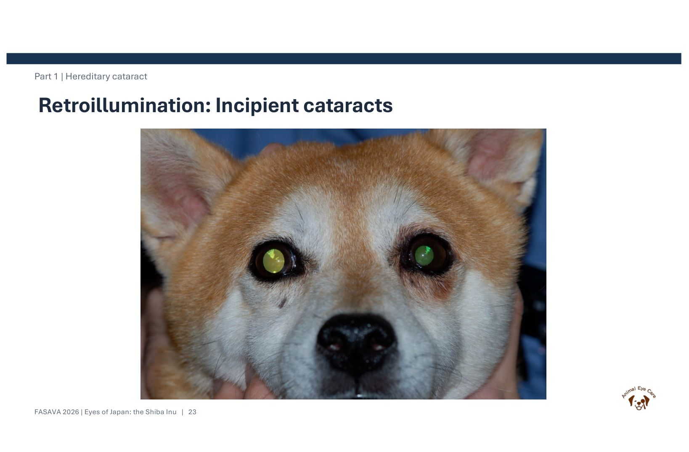
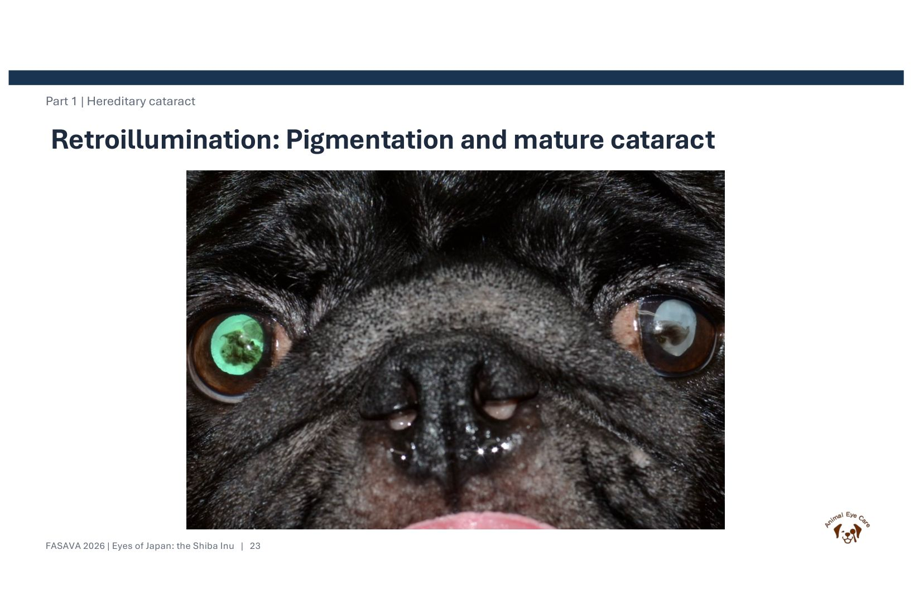
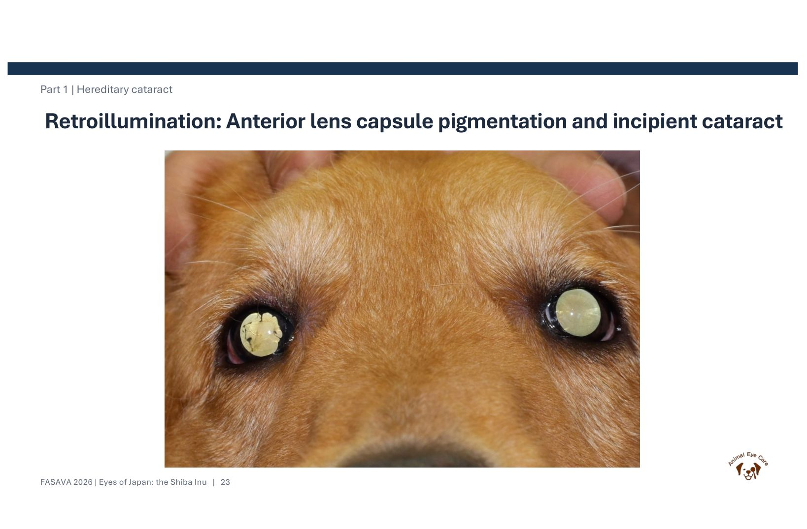
轉診前要做的檢查 — What to examine before referral
| 檢查 | 重點 |
|---|---|
| 裂隙燈（Slit lamp） | 定位混濁（囊、皮質、核、後囊下）；LIU 徵象（充血、閃輝、後粘連）；過熟白內障的囊不規則或 Morgagni 變化 |
| 超音波（Ultrasound） | 正常水晶體厚度約 7 mm；膨脹與囊破裂；看不到眼底時找視網膜剝離 |
| 基本檢查 | 威嚇反應（menace）、眩光反射（dazzle）、瞳孔光反射（PLR）；眼壓（IOP）與螢光染色；雙眼散瞳檢查 |
在白內障成熟前、LIU 或續發青光眼出現前手術最成功，所以要早期轉診。
原發性隅角閉鎖青光眼：認識與診斷 Primary angle-closure glaucoma (PACG)
The most frequently affected breed in Japan.
- 柴犬是日本最常受影響的品種：在 1,244 隻轉診病例中占青光眼 33%；所有柴犬病例都是原發、隅角異常。
- 隅角異常在沒發病的狗也很常見：80.6% 非青光眼柴犬有某種隅角異常——隅角鏡是風險分級，不是診斷。
- 發病隱匿、雙眼都有風險：平均發病約 8 歲；對側眼從第一次就診就要有計畫。
- 時間決定視力：72 小時內就診 86.7% 有視力；早期手術顯著提高視力保留。
瞇眼的柴犬：一定要量眼壓 — Measure the IOP, always
- 眼瞼痙攣（blepharospasm）或紅眼 → 當天量眼壓，每次都要。
- 柴犬：127 隻青光眼犬中 42 隻（33%），為最多的品種；其後依序為 Shih Tzu 16.5%、混種 7.9%、American Cocker 6.3%、Beagle 3.9%、Golden 3.9%、Toy Poodle 3.1%。
- 中年風險最高：平均發病 8.4 ± 3.1 歲。使用回彈式眼壓計（rebound tonometry）。
原發 vs 續發青光眼 — Canine glaucoma is either primary or secondary
| 原發性（Primary） | 續發性（Secondary） | |
|---|---|---|
| 特點 | 多為隅角閉鎖；中老年；母犬較多 | 接在其他眼病之後 |
| 品種／原因 | 柴犬、American Cocker Spaniel、Shih Tzu、Beagle、Toy Poodle、Golden Retriever | 水晶體脫位（lens luxation）、葡萄膜炎、虹膜膨隆（iris bombe）、眼內腫瘤、視網膜剝離、玻璃體脫出、眼內出血 |
柴犬的青光眼絕大多數是原發性隅角閉鎖。Kato 等（2006, Vet Ophthalmol，n = 114）依隅角分級：閉鎖（Closed，28 隻）有 86% 受影響；狹窄（Narrow，40）45%；稍窄（Slightly narrow，33）12%；開放（Open，13）0%。同時 80.6% 沒有青光眼的柴犬也有隅角異常——分級標示的是風險，不是診斷。
青光眼是視網膜與視神經的疾病 — Judge severity at the fundus
- 排出不良使眼壓升高 → 高眼壓殺死視網膜神經節細胞（retinal ganglion cells）→ 損傷大多不可逆；眼底檢查與 OCT 可分期。
- 看不清楚時用眼超音波。決定治療與預後的是眼底，不是眼壓數字。
- 眼底檢查技巧（講者的選擇 My pick）：小口徑 30 D 鏡片（MaxField 30D）適合小眼睛，快速廣角篩檢；要放大視神經盤時用 14 D 或 20 D；介質混濁看不清時改用 OCT 或超音波。
隅角鏡檢查 — Gonioscopy in the Shiba Inu
- 講者的選擇：小尖端的四鏡面隅角鏡（Volk 4Mirror mini）；柴犬眼裂小，大型隅角鏡不好放，四鏡面不用旋轉就能快速看隅角。其他選項：Koeppe、三或四鏡面、非球面鏡。
- 要分級雙眼：80.6% 非青光眼柴犬有異常（Kato 2006）。
- 2–3 歲前先篩檢；隅角窄時每年重複。
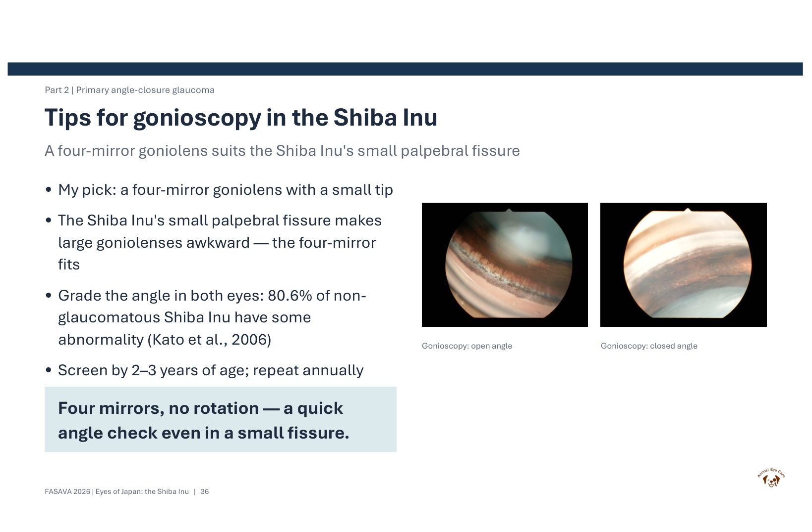
PACG 的治療、病例與預防 Treatment, case 2, fellow eye and genetics
病例 2：柴犬，9 歲，未去勢公 — Case 2
- 主訴：右眼瞇眼，2 天前開始。
- 裂隙燈（右眼）：瀰漫性角膜水腫、瞳孔固定且微散大、結膜與鞏膜上充血、輕度前房閃輝。
- 第 1 天（右眼 vs 左眼）：威嚇反應 0 vs 2、眩光反射 0 vs 2、PLR 0/0 vs 2/2、眼壓 87 vs 19 mmHg、螢光與 Rose bengal 染色陰性、TBUT 正常。
- 眼底：右眼因介質混濁看不清；OCT 與超音波：右眼只輕微眼球增大。
- 診斷：右眼 PACG 急性充血期（acute congestive stage）；左眼 PACG 潛伏期（latent stage）。
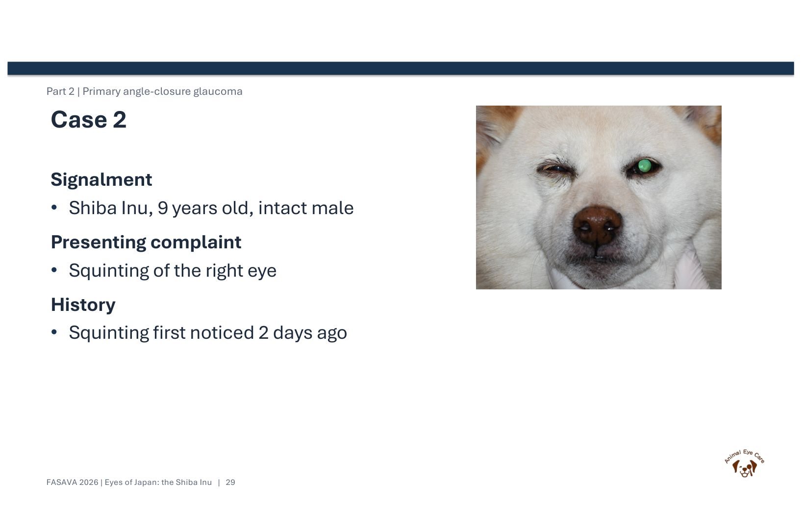
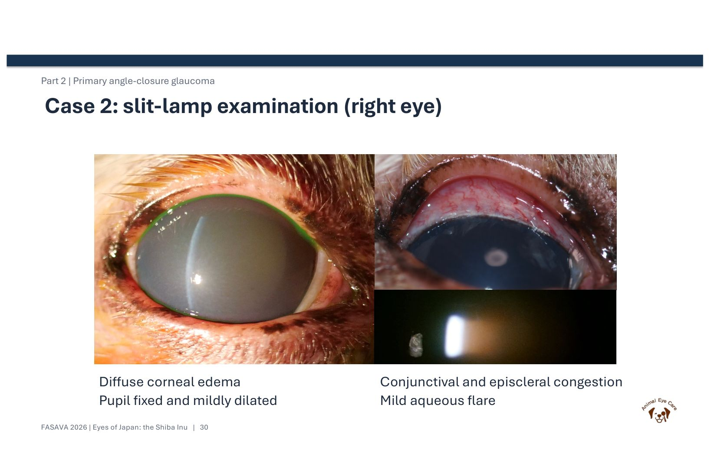
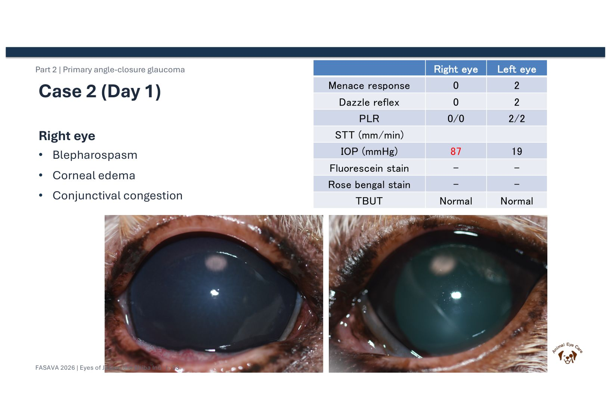
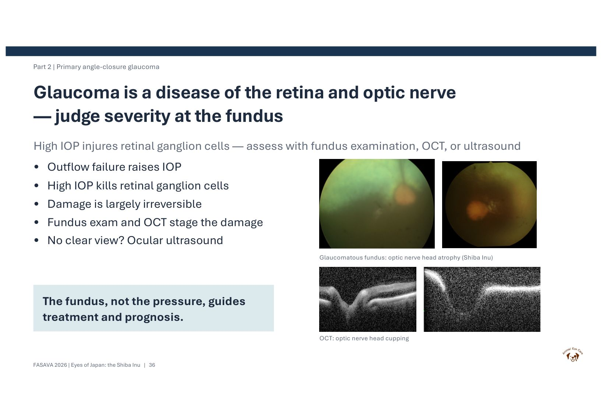
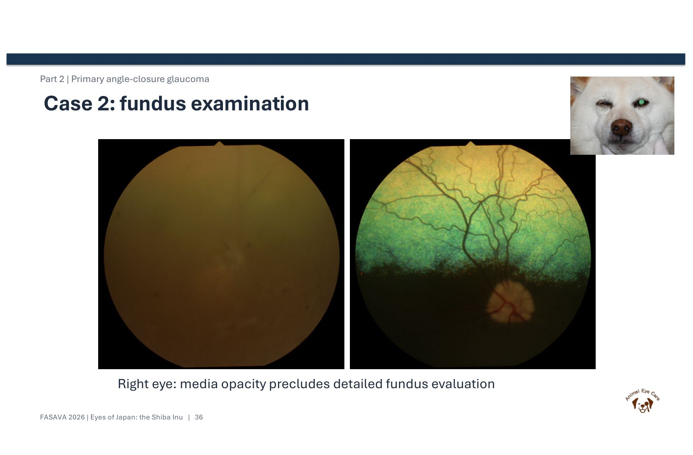
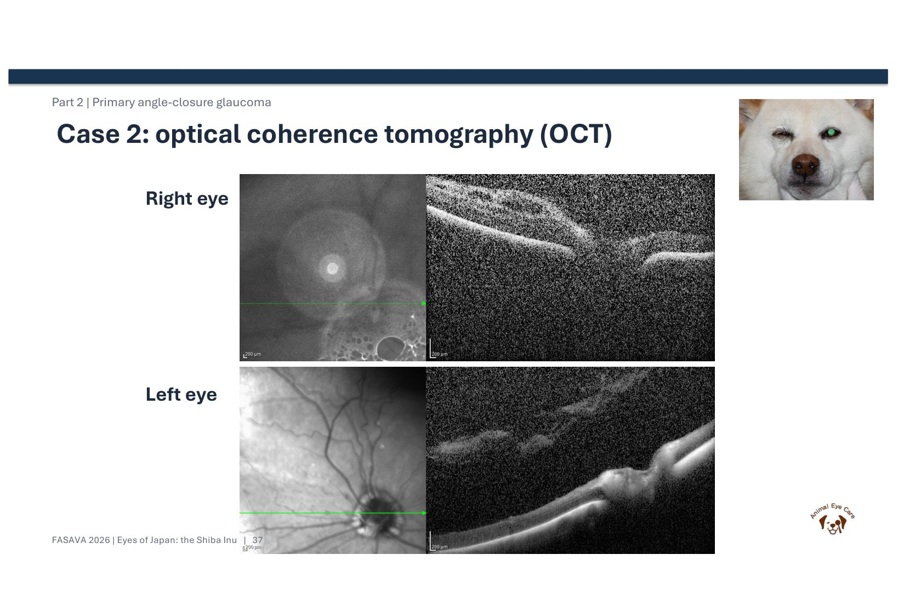
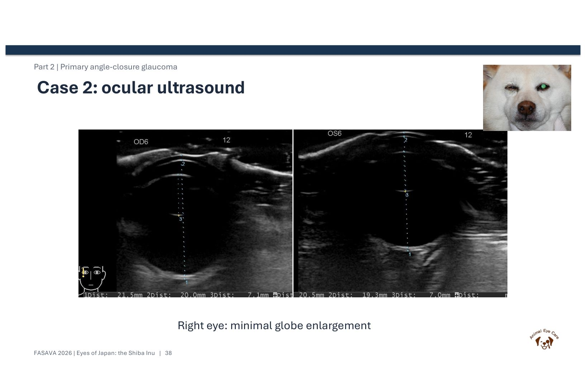
青光眼藥物 — New glaucoma drugs are emerging, but these three remain the basics
| 藥物類別 | 機轉 |
|---|---|
| ① 前列腺素類似物（Prostaglandin analogues） | 增加葡萄膜鞏膜途徑的房水排出（uveoscleral outflow） |
| ② β 阻斷劑（Beta-blockers） | 減少房水生成 |
| ③ 碳酸酐酶抑制劑（Carbonic anhydrase inhibitors, CAI） | 減少房水生成 |
原發性青光眼：前列腺素非常有效 — Prostaglandins work very well
- 一線內科治療：前列腺素類似物（latanoprost）1–2 滴，1–2 小時後複測眼壓。
- 維持：加局部 CAI 與 β 阻斷劑；用類固醇控制發炎；難治時 IV mannitol 降眼壓。
- 這些只是「爭取時間，不是長期控制」。急性發作：趁眼睛還有視力，當天轉診。
前列腺素在續發性青光眼（水晶體脫位、葡萄膜炎）常是禁忌。
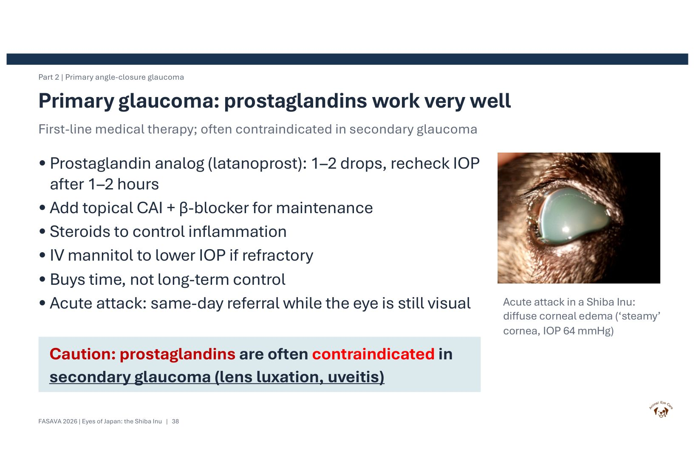
有視力的青光眼：立刻治療 — Every minute counts
- 急性充血性青光眼是急症。Kubo & Ito 2024（65 隻柴犬、104 眼）：發病 ≤72 小時就診，86.7% 有視力；>72 小時只剩 44.1%。
- 眼壓 >40 mmHg 在 24–48 小時內可致盲；就診時 62.5% 仍有視力；失明眼平均眼壓 52 vs 有視力 28 mmHg。當天降眼壓才能保住視力。
病例 2：急診處置與手術 — Emergency treatment
- 院內急診（右眼）：tafluprost 點眼；brinzolamide／timolol 複方點眼；difluprednate 與 diclofenac 點眼；prednisolone 1 mg/kg IV；每小時監測右眼眼壓——降到 34 mmHg，但視力沒有改善。
- 手術：植入 Ahmed 青光眼引流閥（Ahmed glaucoma valve, AGV），視力部分恢復。
- 術後：持續局部 CAI 維持；眼壓追蹤盡量配合飼主頻率，可借眼壓計讓飼主在家監測；術後威嚇反應右 1、PLR 0/0、眼壓 10 mmHg。
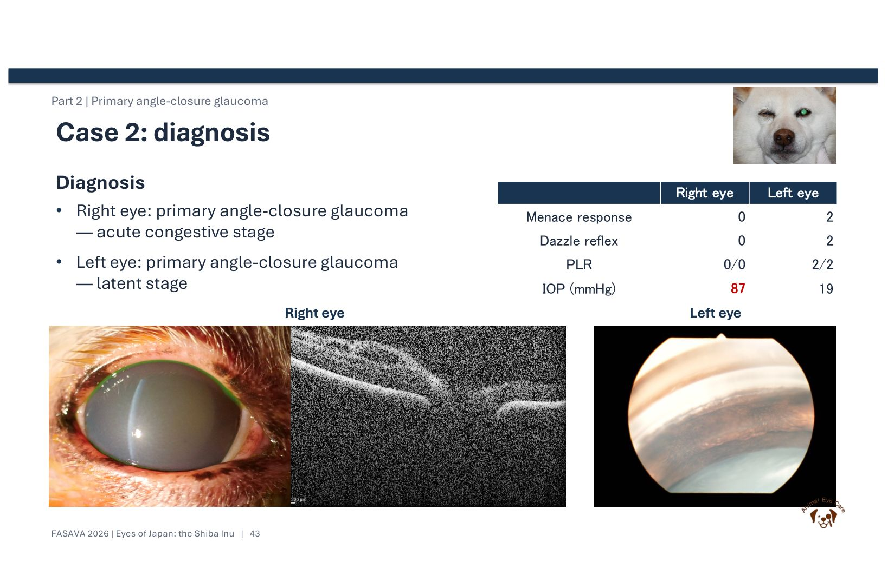
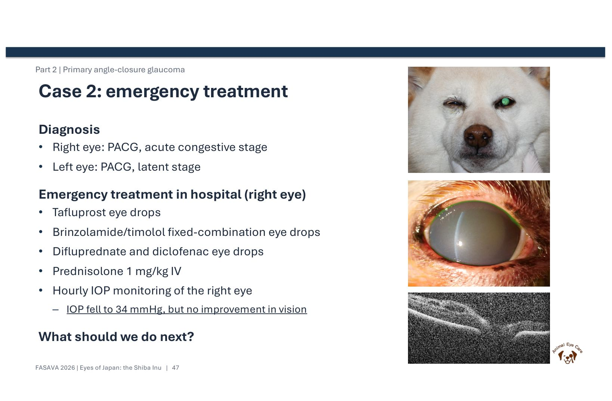
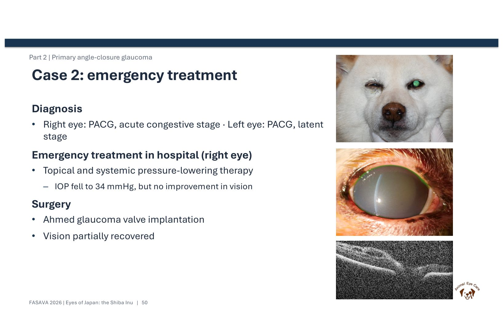
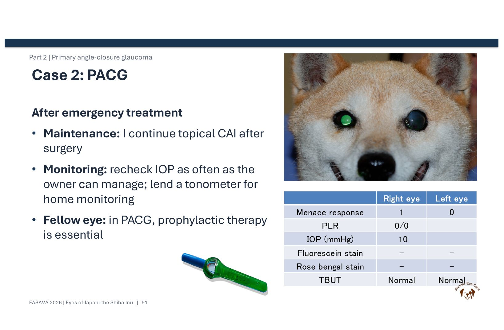
為什麼要趁有視力時手術 — Operate early while vision remains
| 研究 | 結果 |
|---|---|
| Kubo & Ito 2024（有視力的柴犬 PACG）：Ahmed 閥 vs 單用藥物 | 12 個月仍有視力 69.2% vs 7.7%（p < 0.01）；有視力的中位時間 39.9 vs 1.7 個月 |
| Saito 等 2022（132 眼、122 隻狗，AGV 術後） | 平均視力保存 57.5 ± 3.9 個月；柴犬 63.1 個月、其他品種 59.1、American Cocker Spaniel 33.7（柴犬 vs Cocker p < 0.05）；132 眼中 18 眼保有視力超過 5 年 |
趁威嚇反應還在時就轉診。
對側眼的預防 — Prophylaxis for the fellow eye
- 證據：預防性治療延後對側眼青光眼（中位 31 個月 vs 未治療 8 個月，Miller 2000）；各藥物間沒有明顯差別（Dees 2014）；仍有些眼睛雖治療仍會進展（Kato 2006）。
- 病例 2 左眼（對側）：timolol 點眼 TID。
遺傳學：關聯訊號，不是診斷工具 — Genetics
| 基因 | 研究 | 結果 |
|---|---|---|
| SRBD1 | Kanemaki 等 2013 | rs22018513：勝算比（OR）3.03；風險同型合子 OR 10.33（多中心重複驗證，199 隻） |
| SIX6 | Baba 等 2026 | rs851962234：OR 3.56；次要等位基因病例 17.3% vs 對照 4.2% |
兩者在人類都是已確立的青光眼易感基因。臨床解讀：這是中等勝算比的關聯標記，不是致病突變；對個別犬的預測效能尚未建立。隅角鏡與眼壓測量仍是可執行的篩檢工具，基因型未來可能輔助育種決策。
例行隅角鏡、任何紅眼或混濁眼當天量眼壓、早期 AGV 手術、對側眼要有計畫，才能保住視力。
角膜內皮疾病與柴犬的內皮炎 Canine corneal endothelial disease
Degeneration and endotheliitis: a practical summary for general practitioners.
內皮疾病的分類 — Where endotheliitis fits
| 類別 | 特點 |
|---|---|
| 原發性角膜內皮退化（Primary corneal endothelial degeneration, PCED） | 老化性退化或遺傳性失養；Boston Terrier、Chihuahua、Dachshund，也包括老年柴犬；進行性、不可逆的細胞流失；沒有發炎 |
| 續發性內皮損傷（Secondary endothelial damage） | 青光眼、葡萄膜炎、水晶體前脫位；眼內手術、糖尿病；治療原發原因 |
| 角膜內皮炎（Corneal endotheliitis） | 內皮的原發性發炎；典型為「藍眼（blue eye）」：CAV-1 感染或疫苗後的免疫複合體；也有對消炎治療有反應的散發病例（Mayes 等） |
講義提出的問題：主要出現在柴犬、具有地圖狀內皮混濁、局部水腫與輕度發炎的病例，到底是什麼？
PCED：無法治癒的進行性水腫 — Progressive edema with no cure
- 原發、找不到原因；顳側開始、雙側 → 瀰漫性水腫 → 水泡（bullae）、潰瘍、疼痛。
- 鏡面顯微鏡：細胞密度逐漸下降，低於約 500 cells/mm²（正常約 2,300）時出現水腫。
- 無法治癒：點眼藥、ripasudil；疼痛時手術。
典型「藍眼」：內皮炎的古典型 — What is corneal endotheliitis?
- 定義：角膜內皮細胞發炎，造成角膜水腫與前房發炎。
- 古典型：犬腺病毒第一型（CAV-1）感染或活病毒疫苗 → 免疫複合體沉積在葡萄膜與角膜內皮（第三型過敏反應）→ 結膜充血、角膜水腫、葡萄膜炎（Andrew 2008）。
- Mayes 等 2021 報告 4 例（1 隻 Chihuahua、1 隻 Chihuahua 混種、2 隻 Australian Cattle Dog 同胎）：雙側瀰漫性角膜水腫伴前房發炎，消炎治療後改善；裂隙燈見內皮表面混濁，OCT 見內皮高反射結構，共軛焦顯微鏡內皮細胞密度下降。
柴犬的內皮炎：一個獨特的臨床實體 — Corneal endotheliitis in Shiba Inu (Morita et al., 2026)
- 特徵性表現，不同於古典藍眼：年輕到中年柴犬眼壓正常，出現地圖狀內皮混濁、局部水腫與結膜充血；與疫苗沒有時間關聯，水腫較輕。
- 對局部類固醇有反應但會復發：30 眼的發炎都在 2–6 週內消退；其中 8 眼在減藥期間復發。
- 比原發性退化輕，但細胞仍可能流失：發病年齡較輕、細胞密度較高；長期追蹤中細胞逐漸減少。
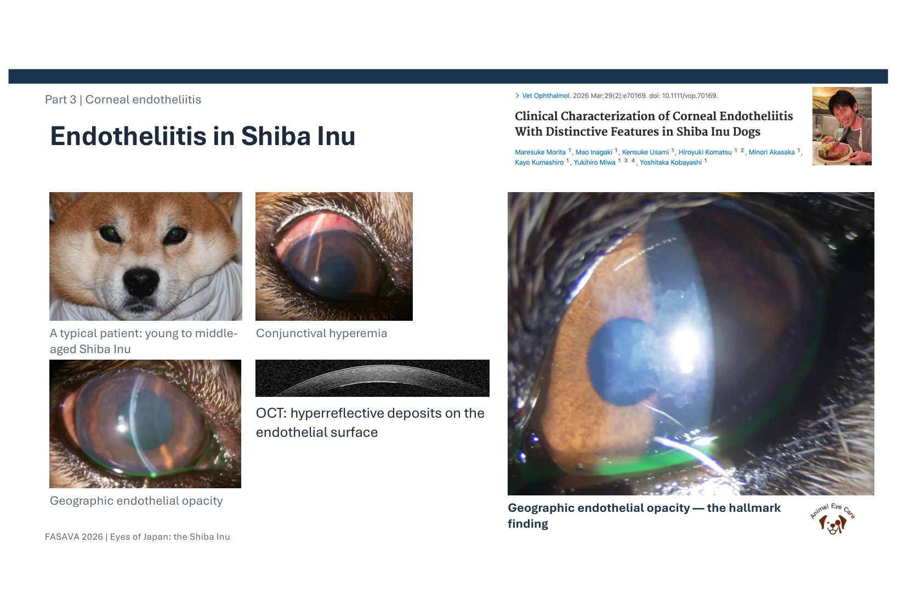
治療：長期控制發炎 — Control inflammation for the long term
- 局部類固醇為主，NSAID 為替代；30 眼都在 2–6 週內緩解。
- 可能是自體免疫性：要長期維持。
- 復發不少見：30 眼中 8 眼在類固醇減量時復發；要緩慢減量、每一階段後複查；維持期留意類固醇副作用。
緩解不等於內皮恢復 — Remission is not the same as endothelial recovery
- 發炎穩定後，地圖狀混濁常會持續；部分狗的內皮細胞密度仍持續下降（一眼 25 個月內由 1,511 降到 595 cells/mm²）。
- 可能的選項：ripasudil（ROCK 抑制劑，Rho-associated kinase inhibitor）可能減緩內皮細胞流失；以鏡面顯微鏡與 OCT 追蹤。
病例 3：內皮炎的 35 個月追蹤 Case 3: Shiba Inu, male, 7 years
初診 — Presentation
- 主訴：雙眼混濁；右眼紅、瞇眼。
- 病史：右眼間歇紅 4 個月；雙眼混濁 2 個月，偶爾瞇眼；diclofenac 點眼可減輕紅但一直復發。
- 檢查：輕度結膜充血、角膜水腫、無角膜潰瘍、眼壓正常（右 16／左 15 mmHg）；威嚇反應 2/2、PLR 2/2、STT 24/24、螢光與 Rose bengal 染色陰性、BUT 正常；眼底與超音波後段無異常。
- 關鍵發現：內皮層的地圖狀混濁、前房幾乎沒有閃輝、無水晶體或後段異常。
- OCT 與鏡面顯微鏡：內皮高反射區域、右眼輕度角膜水腫；右眼細胞密度 1,511 cells/mm²（細胞變大），左眼 2,041（在正常下緣）。
- 診斷：疑似角膜內皮炎；內皮退化，疑似繼發於內皮炎。
- 治療：無防腐劑 0.1% 玻尿酸 TID 雙眼；0.1% betamethasone sodium phosphate TID 右眼。
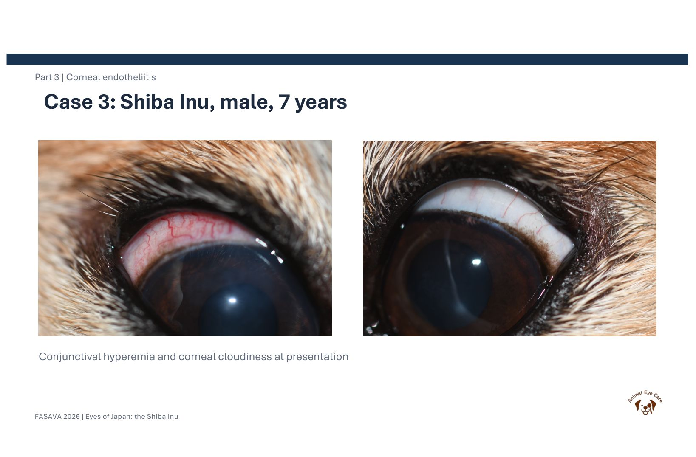
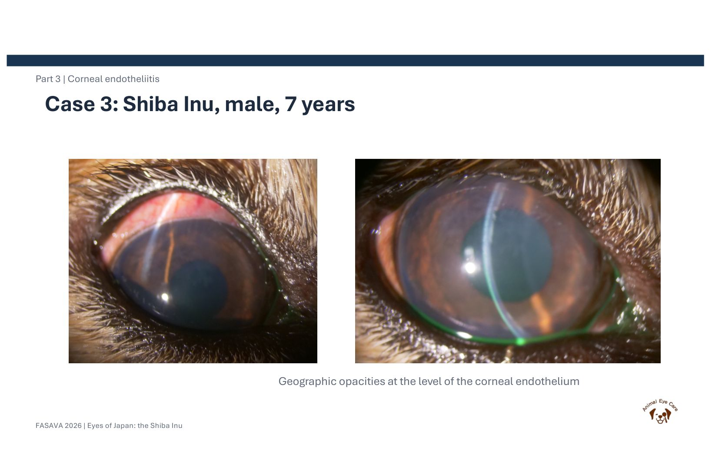
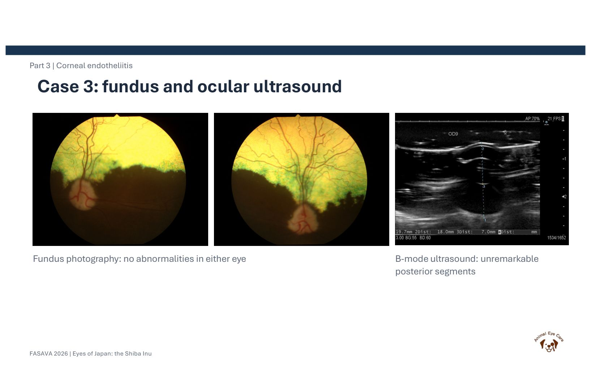
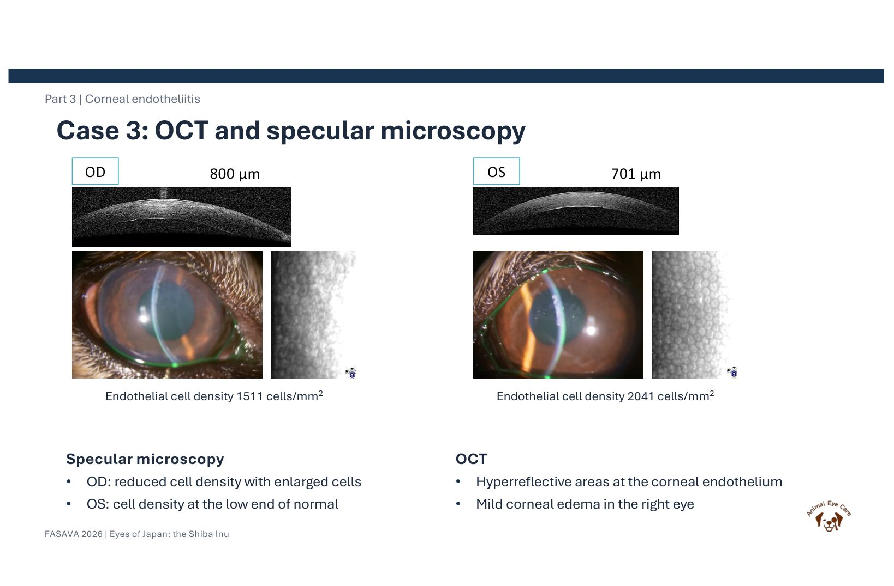
追蹤時間軸 — Follow-up
| 時間 | 發現 | 處置 |
|---|---|---|
| 1 週 | 紅與瞇眼改善；前房無閃輝；眼底正常；眼壓 11／12 | 右眼加 0.1% nepafenac 懸液 TID（併用玻尿酸、betamethasone TID） |
| 6 個月 | 雙眼緩解，內皮混濁仍在 | — |
| 1 年 | 右眼持續緩解；左眼開始變紅；左眼充血、水腫、細胞密度下降（內皮炎惡化） | 玻尿酸 BID 雙眼；betamethasone 右眼每週 1 次（原本已減到每 2 週）、左眼 BID |
| 22 個月 | 雙眼緩解 | 玻尿酸 BID；betamethasone 雙眼每週 1 次 |
| 25 個月 | 臨床上緩解，但內皮細胞密度持續下降（右 595、左 1,136 cells/mm²）且角膜變厚 | 玻尿酸 3–4 次／日；betamethasone 右每週 1 次、左每日 1 次；開始 ripasudil 0.4% 3–4 次／日雙眼 |
| 35 個月 | 緩解維持；厚度與細胞密度「似乎被保住」（右 946 µm、左 771 µm；一眼 1,027 cells/mm²） | — |
各階段細胞密度：診斷時 右 1,511／左 2,041；1 年 右 1,189／左 1,776；25 個月 右 595／左 1,136。解讀要小心：這是單一病例，ripasudil 的效果仍是「可能」，不是證實。
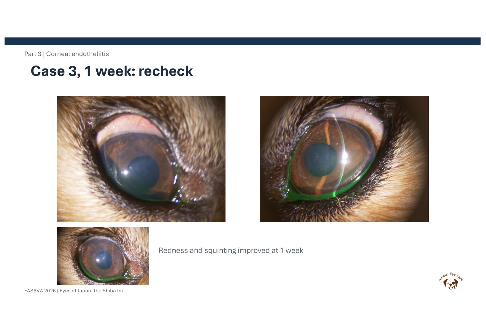
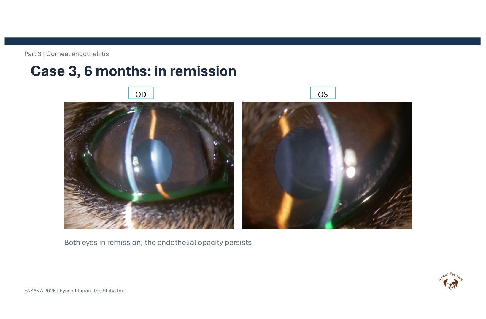
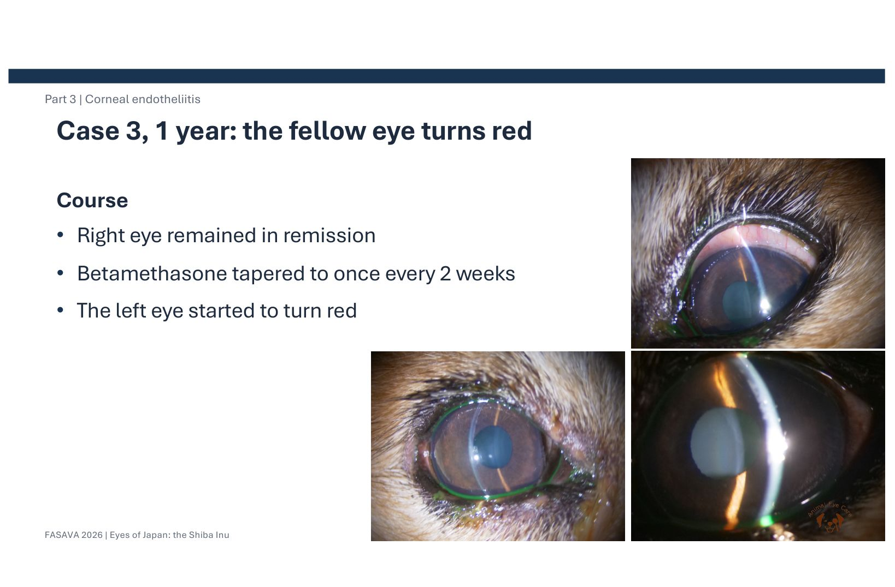
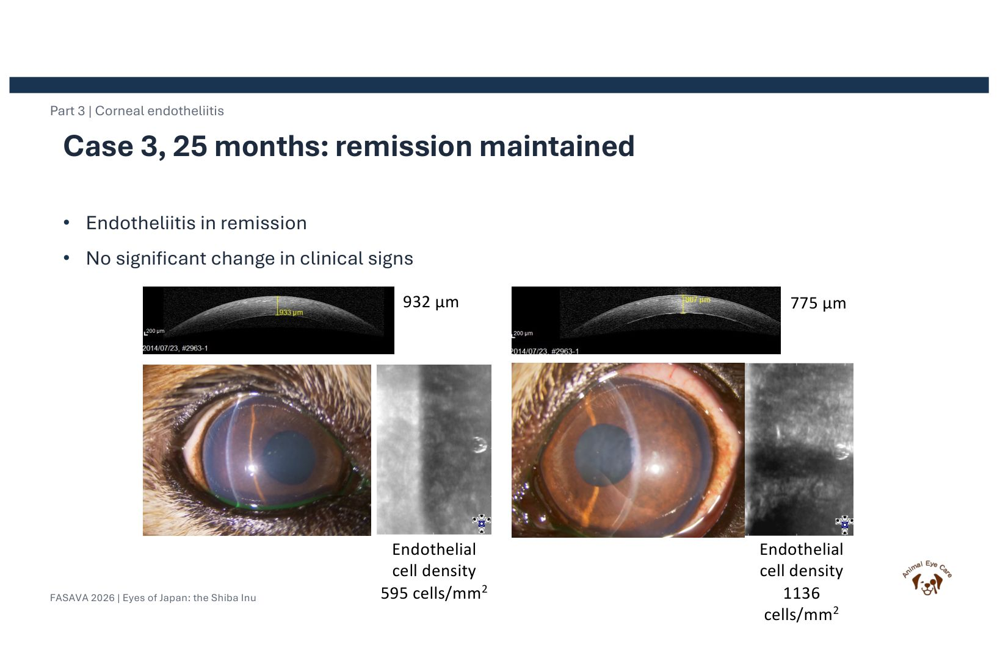
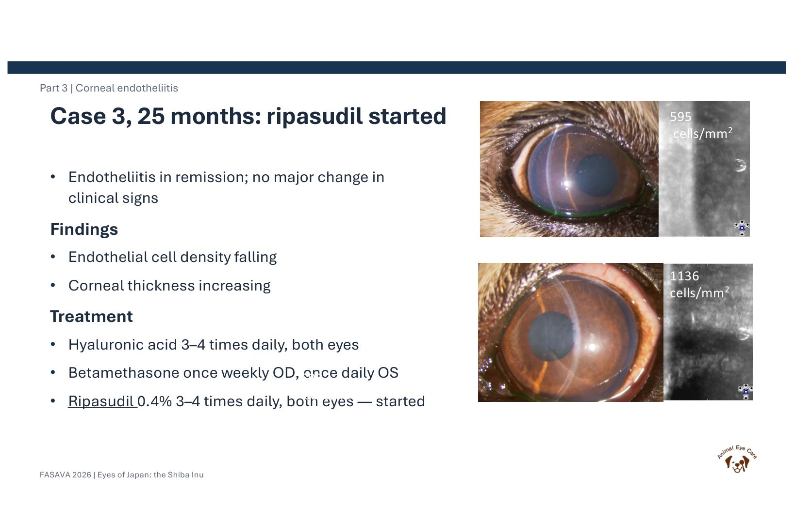
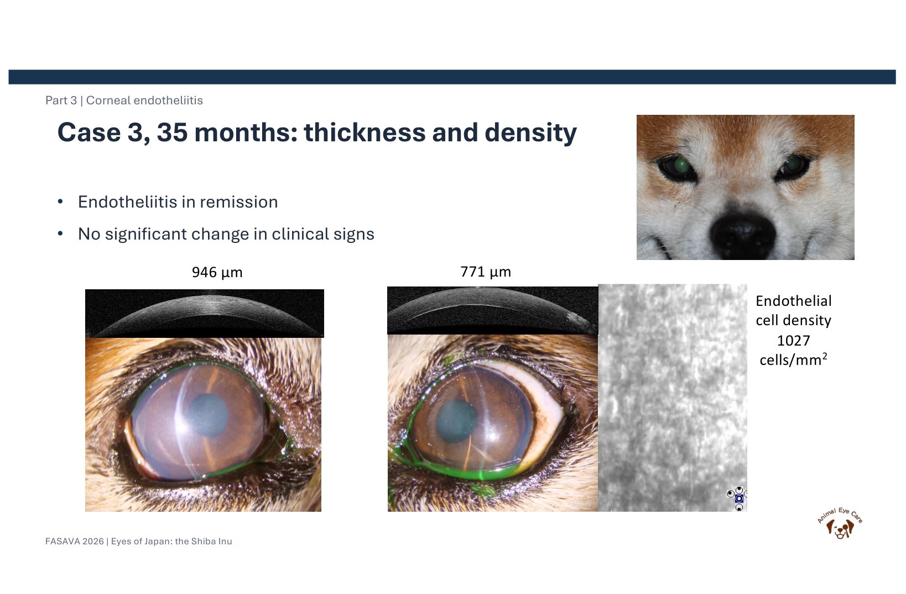
- 內皮混濁伴結膜充血；前房閃輝很少。
- 需要長期局部類固醇控制，留意副作用。
- 內皮損傷可在沒有臨床徵象時持續進展：用鏡面顯微鏡與 OCT 追蹤。
- Ripasudil 可能有效。
- 講者坦承這個疾病仍然了解不足，邀請分享經驗。
- 白內障：年輕犬盡快轉診、篩檢種犬；手術年齡中位 2.1 歲；併發症造成疼痛。
- 青光眼：隅角鏡分級風險、眼壓測量保住視力；紅眼或混濁眼當天量眼壓；早期手術；對側眼要有計畫。
- 內皮炎：對類固醇有反應但會復發；OCT 與鏡面顯微鏡分辨內皮炎與退化並指導長期照護。
縮寫對照表 Abbreviations
| PACG | Primary Angle-Closure Glaucoma（原發性隅角閉鎖青光眼） | LIU | Lens-Induced Uveitis（水晶體誘發葡萄膜炎） |
| IOP | Intraocular Pressure（眼壓） | OCT | Optical Coherence Tomography（光學同調斷層掃描：用近紅外光做眼組織的橫斷面影像，像光學版超音波） |
| AGV | Ahmed Glaucoma Valve（Ahmed 青光眼引流閥） | CAI | Carbonic Anhydrase Inhibitor（碳酸酐酶抑制劑） |
| PCED | Primary Corneal Endothelial Degeneration（原發性角膜內皮退化） | CAV-1 | Canine Adenovirus Type 1（犬腺病毒第一型） |
| PLR | Pupillary Light Reflex（瞳孔光反射） | STT | Schirmer Tear Test（希爾默淚液測試） |
| TBUT／BUT | Tear Break-Up Time（淚膜破裂時間） | RB | Rose Bengal（玫瑰紅染色） |
| EFX | 超音波乳化能量（phacoemulsification 的累積能量指標，講義未展開全名） | PHPV／PHTVL | Persistent Hyperplastic Primary Vitreous／Tunica Vasculosa Lentis（永存增生性原發玻璃體） |
| IQR | Interquartile Range（四分位距） | OD／OS | Oculus Dexter／Sinister（右眼／左眼） |
| DJCVO | Diplomate of the Japanese College of Veterinary Ophthalmologists（日本獸醫眼科專科醫師，依講者頭銜字面推斷，未核對） | ROCK | Rho-associated coiled-coil kinase（Rho 相關激酶；ripasudil 為其抑制劑） |
練習題 Practice questions
以臨床情境呈現，先自行作答再點「顯示答案」核對。
不能因為年輕就排除：柴犬白內障手術年齡中位數 2.1 歲（其他品種 8.4 歲），年輕發病可數週進展，未成熟也可能已有 LIU。第一步用後照法（約 50 cm 打光看眼底反光）篩檢透明介質。轉診前：裂隙燈（定位混濁、找 LIU 徵象如閃輝、後粘連）、超音波（水晶體厚度約 7 mm、膨脹、囊破裂、視網膜剝離）、威嚇／眩光／PLR、眼壓與螢光染色、雙眼散瞳。早期轉診，因為手術在成熟與併發症出現前最成功。
LIU：鞏膜上充血、閃輝、低眼壓（常 <10 mmHg 且低於對側）。未成熟白內障也可能已有 LIU，不代表眼睛安全。要分辨囊完整的溶解型（內科通常可控）或囊破裂型（常需即使仍在發炎也要手術）。沒控制的 LIU 會走向粘連、青光眼、眼球癆；也要找水晶體脫位、視網膜剝離、眼內出血等併發症。
當天量眼壓（回彈式眼壓計）——講義的病例右眼 87 mmHg、威嚇反應 0，診斷 PACG 急性充血期，對側為潛伏期。急診：latanoprost 類前列腺素 1–2 滴並 1–2 小時複測、CAI 與 β 阻斷劑、類固醇、難治時 IV mannitol；但這只能爭取時間。72 小時內就診 86.7% 有視力，之後降到 44.1%；有視力時早期 AGV 手術 12 個月視力 69.2% vs 單用藥 7.7%。要當天轉診，並說明對側眼也有風險，需預防（如 timolol TID）。
隅角鏡是風險分級、不是診斷：80.6% 沒有青光眼的柴犬也有隅角異常；窄隅角代表風險較高（Kato 2006：閉鎖 86% 受影響、狹窄 45%、稍窄 12%、開放 0%）。眼壓正常就不是現在的青光眼。追蹤：2–3 歲前就要篩檢，隅角窄時每年重複隅角鏡與眼壓；教育飼主瞇眼或紅眼要當天就診；基因標記（SRBD1、SIX6）只是中等勝算比的關聯，不能當診斷或預測個體。
疑似柴犬的角膜內皮炎（不同於古典 CAV-1 藍眼：眼壓正常、與疫苗無時間關聯、水腫較輕）。以 OCT 與鏡面顯微鏡與 PCED 區分並追蹤細胞密度。治療：局部類固醇（如 0.1% betamethasone TID），NSAID 為替代，另加無防腐劑玻尿酸。30 眼都在 2–6 週內緩解，但 8 眼在減量時復發——緩慢減量、每階段複查、留意類固醇副作用，可能要長期維持。緩解不等於內皮恢復：細胞密度可能持續下降，ripasudil 可能減緩（單一病例證據）。
參考資料 References
依講義投影片標示的出處整理，僅有作者、年份與期刊資訊，未逐篇核對全文、頁碼或 DOI；本頁沒有另外上網核對講義內數字。
白內障
- Veterinary Ophthalmology, 6th edition（白內障病因）。
- 講者機構（Tokyo Animal Eye Clinic）自己的回溯性資料：柴犬 vs 其他品種手術年齡、EFX、視力保留。
青光眼
- Kato K, et al. 2006. Vet Ophthalmol（隅角分級與青光眼）。
- Kubo & Ito 2024（72 小時與 Ahmed 閥 vs 內科）。
- Saito et al. 2022（AGV 長期視力保存，132 眼）。
- Miller 2000（對側眼預防）；Dees 2014（預防藥物比較）。
- Kanemaki et al. 2013（SRBD1）；Baba et al. 2026（SIX6）。
角膜內皮
- Morita M, et al. 2026. Clinical characterization of corneal endotheliitis with distinctive features in Shiba Inu dogs. Vet Ophthalmol 29(2):e70169.
- Mayes et al. 2021. Veterinary Ophthalmology（4 例犬內皮炎）。
- Andrew 2008（古典型藍眼）。
Morita 2026 的書目為講義第 65 頁截圖所示；其他出處依講義標示整理。